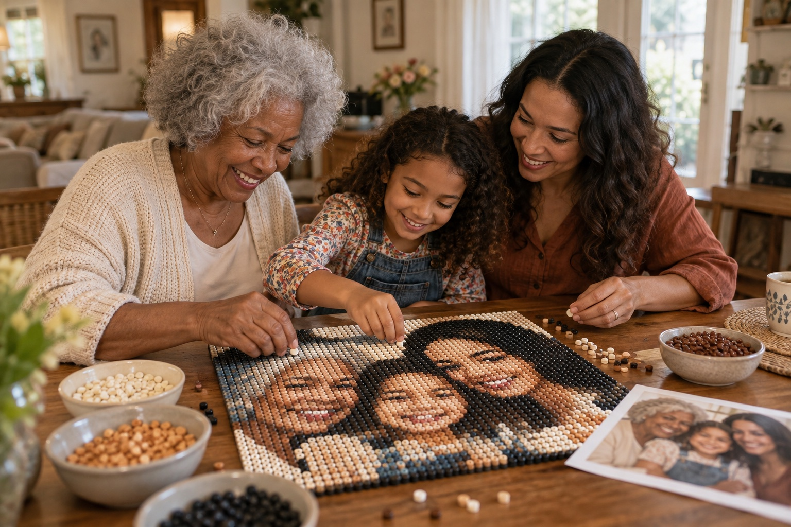
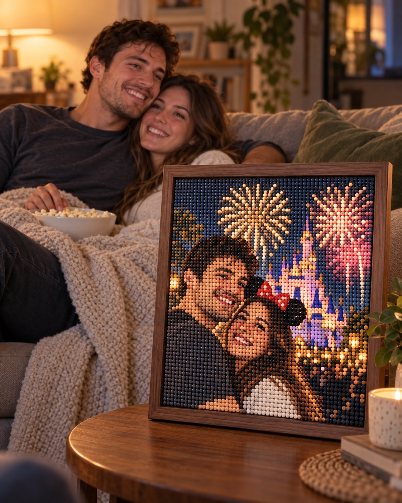
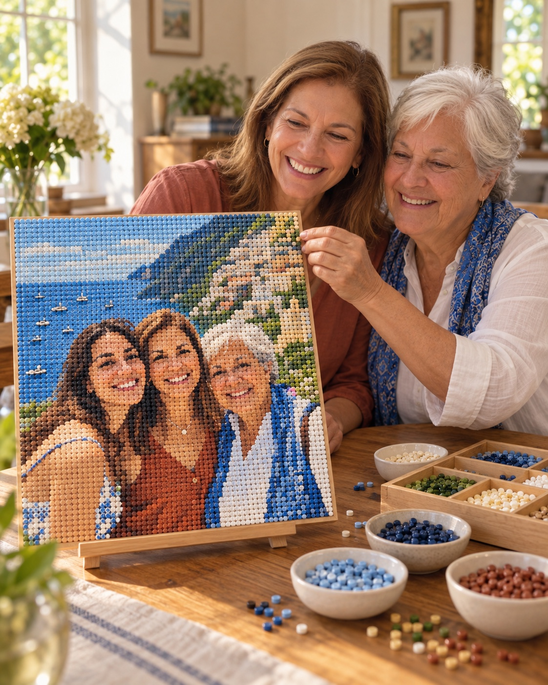

Grandma’s favorite family photo. That date under the fireworks. The trip you still talk about. Turn a shared memory into a brick keepsake to build, give, and keep close.
Keepsakes from $129 USD. See your photo as brick art before you decide.
♡Keep the moment. Remember the feeling.

For Mom. For Grandma. For all of you.A little piece of home.

Illustrative lifestyle scene
That night out. Your nights in.A memory that lives with you.

Illustrative lifestyle scene
The trip you still talk about.One more afternoon together.
01 / 03
Made from your own photo✳A shared moment, made tangible✳Preview it in a home setting
A MOMENT YOU CAN COME BACK TO
The people in the picture. The whole story behind it.
A photograph holds more than faces. It holds the place, the laughter, and what life felt like then. Ido turns that photograph into a tactile brick mosaic—something to build together, give to someone you love, or keep in your own home.
WHICH MOMENT WOULD YOU KEEP?
Some photos mean a little more.
Start with the moment that comes to mind. It doesn’t have to be a perfect photograph.
01 / FAMILY
Everyone together. Just like that day.
The reunion. Mom’s birthday. Three generations in one frame. Give your parents or grandparents a familiar moment to enjoy every day.
That night under the fireworks. Your first weekend away. A little date you still talk about. You don’t need to wait for a wedding to keep a moment that means something to you.
That seaside afternoon. The road trip with Mom. The place everyone wants to go back to. Bring a little of it home. Then spend an afternoon building it together.
Try your photograph. Compare it with the brick texture. Choose a frame and see how it feels in a home.
8 mm round bricks · Photo-matched colour simulation, not a confirmed brick palette.
01
Choose your moment
Your photo stays in your browser.
Just exploring?
02
Make it yours
Your keepsake
20.8″ × 20.8″ · 52.8 × 52.8 cm
$177USD
Estimated 66 × 66 grid · 4,356 round bricks
Frame finish
A little inspiration for now. Ordering isn’t open yet.
How this preview works
Your selected size sets the grid. Each 8 mm cell samples the colours in that part of your photo and becomes one round brick. Each brick has one solid colour, not a printed fragment of the photo. The optional low-light correction lifts shadow colours before sampling; mild sharpening emphasizes edges without adding more bricks.
Colours are simulated directly from your photo. Actual results depend on the available brick colours, lighting and image quality. At the smallest size, 50 × 66 bricks provide only 3,300 colour samples for the whole scene. Small faces and distant details may remain simplified. Larger sizes use more bricks, so faces can retain more detail.
Grid counts are estimates based on 8 mm spacing and the listed dimensions; the final count depends on the frame allowance. Home views are styled mockups, not measurements of your room; check furniture clearance before choosing a size.
FROM ONE SPECIAL PHOTO TO SOMETHING YOU KEEP
Keep one memory. Make another.
Build it for someone, or gather around together. The making becomes part of the story.
01 / CHOOSE
The moment that matters.
Choose a family gathering, a favorite date, a wedding moment, or a shared trip. Preview the whole scene and find the crop you want to keep.
02 / BUILD
Bring the moment back.
Build the image piece by piece. Share the stories behind the photo, or make it as a surprise for someone who was there.
03 / KEEP
Give it a place to stay.
Keep it on a favorite shelf, hang it where you’ll see it, or give it to Mom or Grandma. A shared memory becomes part of everyday life.
Take your time: larger artworks can take several sessions. That’s part of the making.